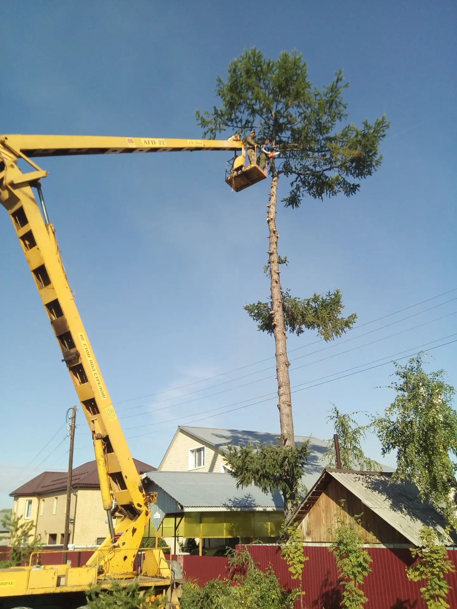
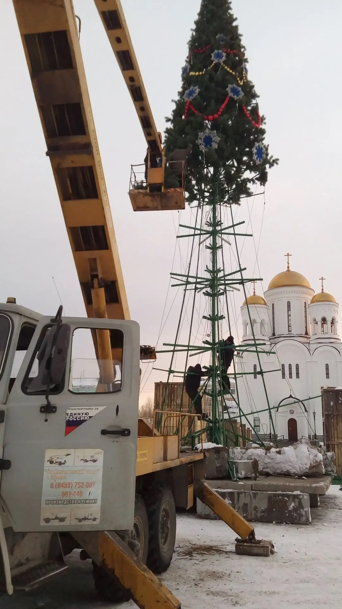
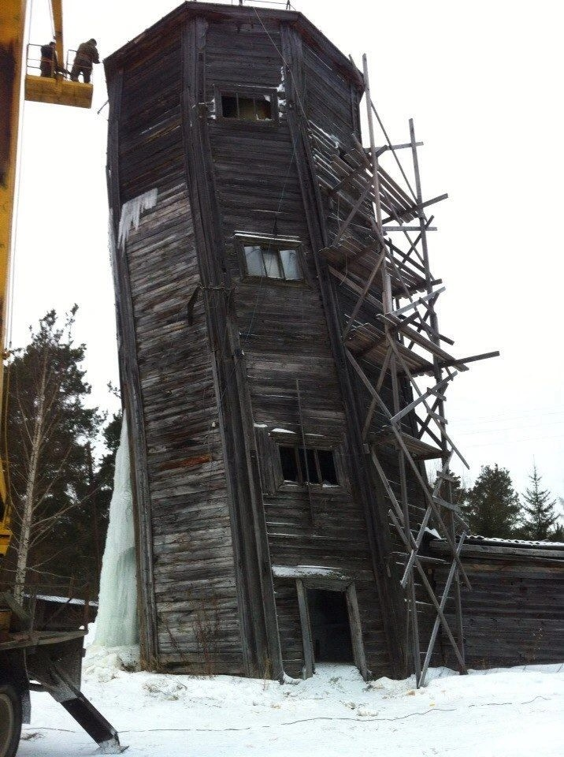

Аренда автовышки и оператор в Серове
Спил веток, вывески, монтаж, фасады, обслуживание на высоте. Машина приезжает с оператором.
- Выезд в день обращения, аварийные — в приоритете
- Без предоплаты. Работаем 8:00 – 21:00, без выходных
- Договор, безнал, ЭДО, закрывающие документы

Параметры вышки
| Марка / модель | АГП-22 |
|---|---|
| Высота стрелы | 22 м |
| Грузоподъёмность люльки | __ кг |
| Вылет | __ м |
| Шасси | Вездеходная база |
| Габариты (Д×Ш×В) | __ × __ × __ м |
| Проедет во двор? | Да, проходит там, где обычная автовышка не возьмёт |
Для чего берут вышку
- Спил и обрезка деревьев
- Вывески и баннеры
- Кровельные работы
- Электромонтаж на высоте
- Покраска фасадов
- Обслуживание освещения
- Съёмка и видео
- Территории предприятий
Условия аренды
| Минимальная смена | 8 ч |
|---|---|
| Ставка за час | от 2 500 ₽ (⚠ ориентир) |
| Ставка за смену (8 ч) | от 15 000 ₽ (⚠ ориентир) |
| Выезд | в пределах Серова входит, дальше считаем по км |
| Вечер и выходные | работаем 8:00 – 21:00, пн-вс, без доплаты за выходные |
| Зона работы | Серов + 150 км |
Только с оператором
Безопаснее и дешевле для клиента: не нужны допуски и разрешения на самоходную технику, оператор отвечает за ТБ.
Допуски и опыт
- Оператор с допуском:
- Страхование:
- Опыт: 17 лет на рынке, своя техника и бригада от 1 до 10 человек
Три шага
Заявка с задачей
Что делаем, где, на какой высоте.
Подбор смены
Согласуем время и стоимость.
Выезд
Вышка и оператор на объекте.
Договор, безнал, документы
Работа по договору, безналичный расчёт, ЭДО, закрывающие документы (акты, УПД).
Вопросы по аренде
Нужно ли согласование?
Для работ на территории заказчика — нет. Если вышка выезжает в проезд общего пользования или перекрывает тротуар на длительное время, может потребоваться согласование с администрацией. Подскажем, если это ваш случай.
Что входит в час работы?
Подача вышки, работа оператора, топливо. Время считаем от момента начала работ на объекте. Простой по причине заказчика также тарифицируется.
Что если вышка не пройдёт по габаритам?
У нас АГП-22 на вездеходной базе — проходит там, где обычная автовышка не пройдёт: мягкий грунт, узкие дворы, просёлок. Если и этого не хватает — работаем промальпом.
Можно ли отменить заказ?
Да. Отмена накануне или раньше — бесплатно. Отмена в день выезда, когда машина уже вышла — оплачивается подача (⚠ ориентир, уточнить у ИП).
Автовышка в работе
Выборочно из 50+ выездов. Муниципалитет, частные дома, предприятия — техника везде одна и та же, своя АГП-22 на вездеходе.





Рассчитать смену
Опишите задачу и адрес. Подберём время и назовём стоимость.